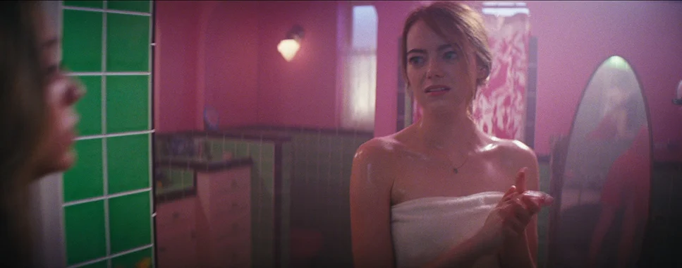
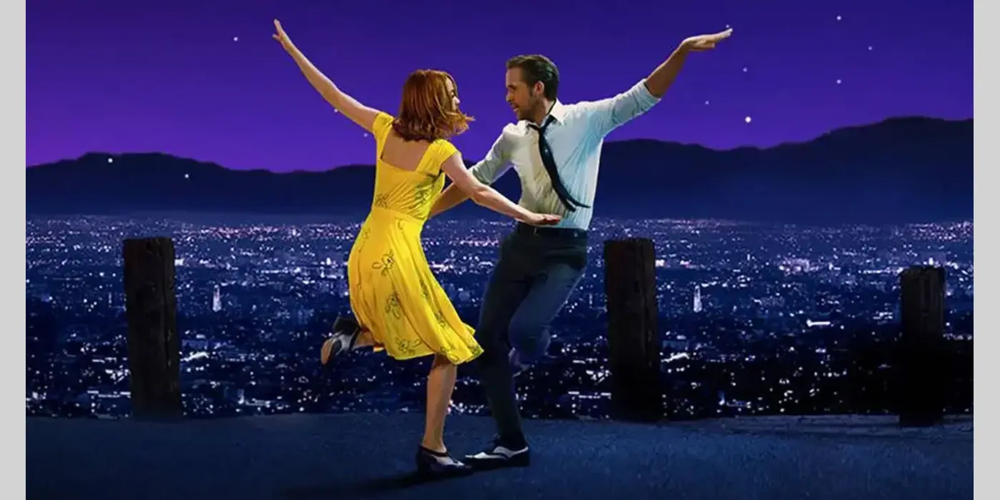
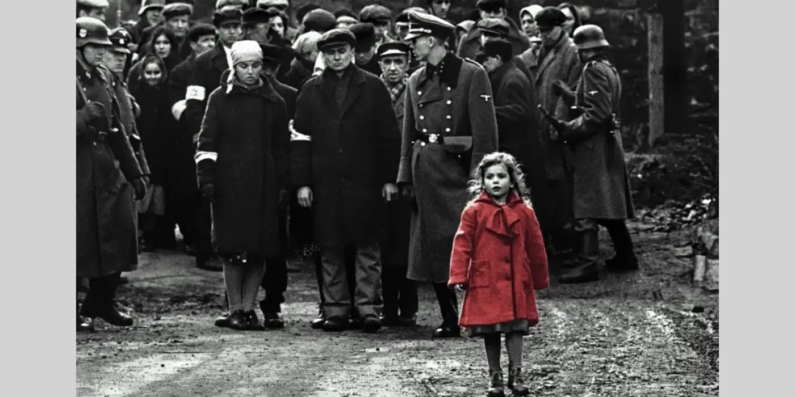

Youtube: StudioBinder - Color Psychology for Directors: Ep5
Film color palettes matters to the audience. It’s not only aesthetic, it also affects storytelling. This video takes you through director’s choices when it comes to colorization in their film works and how those colors get different emotional responses from the audience.
A set of priniciples that combine science and art to understand how colors interact, mix, and affect human emotions and perceptions.
The colors a filmmaker chooses aren't just aesthetic decisions. They're storytelling decisions. They tell us who a character is, what a world feels like, and where the emotion of a scene is headed. Color triggers emotional and psychological responses that are almost involuntary. In general, warm tones like reds, oranges, and ambers tend to feel energetic, intimate, or dangerous depending on context. Cool tones, like blues, greens, grays, can read as calm, melancholy, clinical, or otherworldly. Within each color are a multitude of hues you can break down even further to specifically hone in on the exact level of emotion you're seeking.
Monochromatic color palettes are harmonious and even a dreamy color combination.
These palettes avoid high contrast, often evoking specific emotions like tranquility or overwhelming tension, and are frequently used to reflect environments in nature.

By pairing warm and cool tones, filmmakers generate intense visual tension, highlight characters, and emphasize conflict, making the image pop.
The best way to understand is to see how it's used in major movies and TV shows.
Films like La La Land, Schindler's List, and The Matrix demonstrate how color theory can shape meaning, from vibrant hues expressing emotion and ambition, to stark black-and-white realism punctuated by symbolic color, to contrasting tints that separate illusion from reality. Other films, such as Mad Max: Fury Road and Moonlight, similarly use bold palettes and shifting tones to reflect character identity, environment, and emotional transformation, showing how color can act as a powerful storytelling tool beyond dialogue.

Damien Chazelle
In La La Land, color theory plays a key role in expressing emotion and character development, with director Damien Chazelle using bold, saturated hues, like Mia’s bright yellow dress symbolizing hope and ambition, and cooler blues and purples reflecting moments of isolation or longing to visually track the shifting relationship between the protagonists and the tension between dreams and reality.
Watch Movie
Steven Spielberg
In Schindler's List, director Steven Spielberg uses color theory in a strikingly minimal way by presenting most of the film in black and white to evoke historical realism and emotional gravity, while selectively introducing color. Most famously the girl in the red coat, to draw attention to innocence amid horror and to symbolize the human cost of the Holocaust, making the moment deeply impactful and unforgettable.
Watch MovieThe Wachowski sisters
In The Matrix, the Wachowski sisters use color theory to distinguish between realities: scenes inside the Matrix are tinted green, evoking computer code and artificiality, while the real world is cast in cold blue tones to emphasize its bleakness and authenticity; this contrast helps viewers subconsciously track where they are while reinforcing the film’s themes of illusion versus reality.
Watch MovieColor theory in film is a powerful visual language used to communicate emotion, tone, and narrative subtext. While it is essential for immersive storytelling, its effectiveness depends on the context of the story and can sometimes lead to clichés or visual fatigue.
u/SlashMatrix - Reddit Filmmaking Community
This clip demonstrates how color grading can dramatically shift mood and tone. By adjusting hues and saturation, the same scene can feel warmer, darker, or more emotionally intense, showing how powerful color is in visual storytelling.
Powered by w3.css